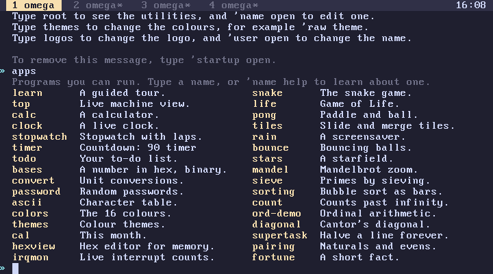
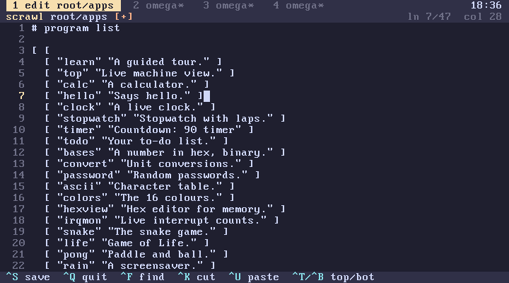
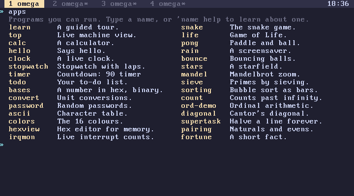

subverge
subvergeApps
apps lists the programs that come with Subverge, two columns of names with a short description each. Type a name to run one, and 'name help to read its entry first. Almost all of them quit with q, and the rest say how on their first screen.

See tools, games, demos and learn. They are all omega code in root, so 'name open shows how any of them works and lets you change it.
How the list is made
A program in Subverge is an ordinary word, and nothing distinguishes it from a helper word. apps therefore doesn't search for programs. It prints a hand-written list, app-list, defined in the apps unit of root:
[ [
[ "learn" "A guided tour." ]
[ "top" "Live machine view." ]
...
] ] :app-list
Each entry is a list of two strings, the name and the description. The outer brackets are doubled because app-list is a quote that, when run, pushes the inner list.
Adding a program
First write the program as a word in a root unit, so it exists in every tab and survives reboots. Then add it to the list:
'apps open
and add a line inside the inner brackets:
[ "hello" "Says hello." ]
Save with C-x C-s and quit with C-x C-c. The unit rebuilds, and the next apps shows the new entry.


The order of the list is the order on screen, filled down the first column and then the second. A long description runs into the next column, so keep them under about 25 characters.
Programs defined in a tab
The list lives in root, so every tab shows every entry. If the program itself is only defined in one tab's world, the other tabs list it but fail with hello isn't defined when it is run. Put programs that are listed in apps in a unit.
Writing a program
Most of the bundled programs follow the same pattern, built from helpers in the core unit:
[ "hello" title
[ "hello" header "hi there" 2 2 7 text ] watch
"omega" title
] :hello
title names the tab while the program runs, header draws the bar across the top with the program's name and q quits, and watch clears the screen, runs the quote every half second until a key is pressed, and clears the screen again. 'watch see and 'header see show how they work. For the drawing words, see screen.